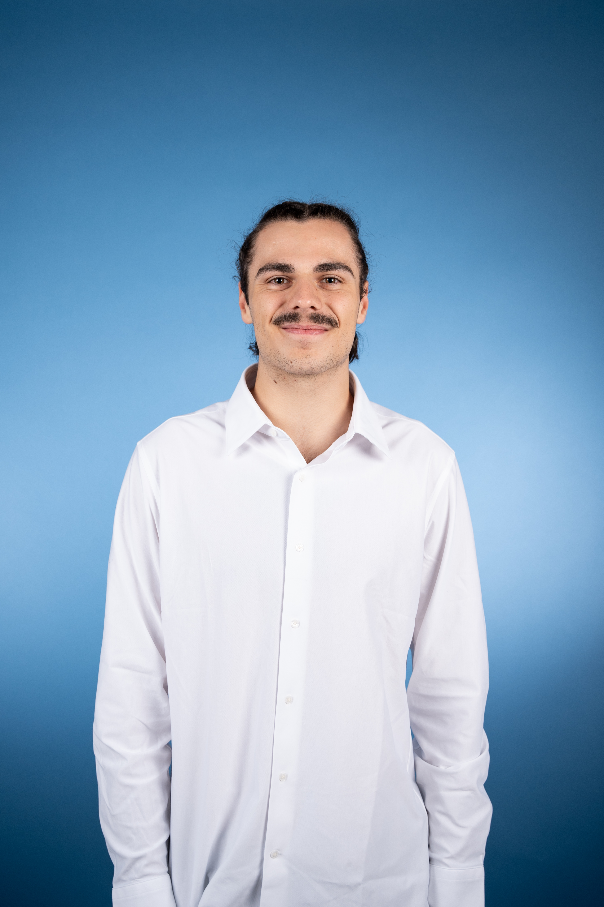

Raphaël Cassard,
RF, Microwave &
Antenna Engineering Student.
Bonjour, je suis Raphaël, élève-ingénieur à l'ENSEEIHT (Toulouse INP) spécialisé en électronique haute fréquence, circuits RF et conception d'antennes. Actuellement en stage de recherche à l'USFQ (Équateur) sur la conception d'antennes et les télécommunications radio, je recherche une opportunité à forte valeur ajoutée en R&D Hardware RF pour début 2027.

Design d'Antennes & EM
Conception & simulation sous ANSYS HFSS à 5.7 GHz (patch parasitaires gap-coupled, adaptation 1/4 d'onde, S11 < -10 dB, BP 9.2%, cornet, guide à fente).
Circuits RF & Hyperfréquences
Simulation Keysight ADS (Momentum), amplificateur MLA 5.2 GHz, abaque de Smith, adaptateurs d'impédance & CEM.
Banc d'Essai SDR & Beamforming
Exploitation de testbenches SDR à 5.7 GHz, algorithmes ToA (Time of Arrival), transition bande ISM et préparation arrays d'antennes pour beamforming actif.
FPGA & Design Numérique
Synthèse VHDL sous Vivado sur Artix-7 (XADC), CAO Synopsys, C/C++, Python & MATLAB / Simulink.
À la recherche d'une opportunité R&D Hardware RF / Antennes
Entrée en M2 (2026-2027), disponible pour des projets à forte valeur ajoutée en conception RF, antennes et télécommunications.
Mon Parcours Académique & Pro
De la prépa PC* aux circuits hyperfréquences, antennes et stages de recherche en laboratoire.
ENSEEIHT Toulouse (Toulouse INP)
Diplôme d'Ingénieur CTI (Filière EEA - Majeure SysCom)
Majeure SysCom (Systèmes Communicants) au sein du département 3EA. Formation d'ingénieurs experts de la chaîne globale des télécommunications et systèmes intelligents, couvrant les circuits haute fréquence (RF), la propagation & antennes, les systèmes embarqués communicants (IoT, FPGA) et le traitement du signal pour l'aéronautique, le spatial et les télécoms.
Cours Pertinents & Spécialités
- • Systèmes hautes fréquences embarqués
- • Circuits hyperfréquences et CEM
- • Phénomènes liés à la propagation & OEM
- • Circuits RF & Adaptateurs Smith
- • Systèmes Nanosatellites & Spatial
Logiciels & Outils de CAO RF
Pratique quotidienne d'ANSYS HFSS, Keysight ADS (Momentum), Xilinx Vivado (VHDL), Orcad PSpice, KiCad et Synopsys.
Lycée Henri Poincaré, Nancy
Classes Préparatoires aux Grandes Écoles (CPGE)
Classe préparatoire de niveau avancé. Rigueur mathématique, modélisation physique et préparation intensive aux concours des Grandes Écoles.
Bases solides en Physique, Chimie et Sciences de l'Ingénieur. *Baccalauréat Scientifique Mention Très Bien en 2022*.
Expériences Professionnelles & Stages
Stagiaire Recherche — 5.7 GHz SDR Testbench, Design d'Antennes & Beamforming
Juin – Août 2026Universidad San Francisco de Quito (USFQ) — Cumbayá / Quito, Équateur
- • Migration vers la bande ISM 5.7 GHz : Adaptation de la plateforme de géolocalisation 5G ToA (Time of Arrival) vers la bande libre 5.7 GHz pour s'affranchir des licences d'expérimentation campus.
- • Design d'antennes directives sous ANSYS HFSS : Conception d'antennes microstrip directives 5.7 GHz à couplage de fente/parasitaire pour élargir la bande passante (BP de 9.2%, S11 < -10 dB, adaptation 1/4 d'onde).
- • Testbench SDR & Multi-User MIMO : Exploitation du banc d'essai SDR pour le test de résistance à longue distance, l'interconnexion multi-utilisateurs et la préparation de réseaux d'antennes pour le beamforming actif et le RF Fingerprinting.
Mécanicien de Maintenance Industrielle
Juin – Août 2025Rénovation Machines Industrielles (RMI) — Nomeny & France
Autonomie technique, adaptabilité sur le terrain et rigueur en environnement industriel contraint.
Opérateur de Maintenance Biomédicale
Août – Sept 2023Quipment — Nancy, France
Respect strict des normes cliniques biomédicales et processus de qualification rigoureux.
Projets RF, Antennes & Micro-ondes
Simulations électromagnétiques HFSS, circuits hyperfréquences ADS, antennes et systèmes FPGA.
Conception d'Antennes 5.7 GHz pour Beamforming & RF Fingerprinting
Conception et simulation d'antennes directives à 5.7 GHz sur la plateforme SDR pour la transition du banc de géolocalisation ToA vers la bande libre ISM.
- • Modélisation sous ANSYS HFSS de microstrip patchs à couplage capacitif / parasitaire pour élargir la bande passante (BP 9.2%, S11 < -10 dB).
- • Adaptation d'impédance 50 Ohms par transformateur quart d'onde sans perçage de vias.
- • Préparation des briques élémentaires pour le beamforming actif et l'extension vers une architecture Multi-User MIMO.
Amplificateur Hyperfréquence MLA 5.2 GHz
Conception intégrée d'un amplificateur hyperfréquence à faible bruit dans la bande ISM 5.2 GHz pour un émetteur superhétérodyne.
- • Calculs précis du point de polarisation statique et dynamique du transistor.
- • Adaptations d'impédance d'entrée et de sortie sur abaque de Smith.
- • Synthèse du layout sur substrat RF et simulation électromagnétique sous Keysight ADS Momentum.
Antenne Patch, Antenne Cornet & Guide d'Onde à Fente
Étude, dimensionnement et simulation sous ANSYS HFSS de diverses structures d'antennes et guides d'ondes pour applications spatiales et télécommunications.
- • Antenne Patch : Calcul du patch rectangulaire, adaptation par ligne quart d'onde et diagrammes de rayonnement.
- • Antenne Cornet : Optimisation du gain directif et ouverture du faisceau.
- • Guide d'onde à fente : Réseau d'antennes guidées et répartition des champs EM.
Liaison Audio par Modulation FM
Dimensionnement complet d'un émetteur-récepteur FM pour transmission audio haute fidélité.
- • Génération de fréquence par VCO et démodulation par PLL.
- • Étage amplificateur Cascode pour immunité contre les effets capacitifs parasite.
- • Filtrage actif Sallen-Key et Rauch pour réjection de porteuse.
Mobilité Internationale & Stage USFQ
Expériences de recherche à l'étranger, compétences linguistiques et engagement éco-responsable.
Compétences Linguistiques
Pratique fluide à l'écrit et à l'oral en environnement de recherche.
Stage USFQ (Équateur)
Quito / Cumbayá (USFQ)
Juin – Août 2026Stage de recherche à l'Universidad San Francisco de Quito (USFQ). Transition vers la bande ISM 5.7 GHz, conception HFSS d'antennes directives et mise en œuvre du banc SDR pour le beamforming et l'architecture Multi-User MIMO.
Empreinte Carbone
Conforme aux objectifs
L'impact carbone de 3,65 t CO2eq s'inscrit en dessous du seuil cible de 6 t.
Projet Professionnel & Secteurs Cibles
Intitulés de postes, domaines d'expertise visés et entreprises cibles en R&D Hardware RF.
Intitulés de Postes Recherchés (Cœur de Cible)
Missions Souhaitées :
Design, simulation électromagnétique 3D (HFSS, ADS Momentum), caractérisation d'antennes directives 5.7 GHz, adaptateurs d'impédance, bancs de test SDR, beamforming actif et architectures Multi-User MIMO.
Technologies Incontournables :
Secteurs & Entreprises Cibles
Aéronautique, Spatial, Défense, Télécommunications, Composants Hardware RF, Laboratoires R&D (CNES, ONERA, CEA, CNRS...).
Mobilité & Conditions
Diapositives de Présentation PPP
Découvrez le support de ma présentation sur l'orientation et l'analyse de marché.
Engagements Citoyens & Loisirs
Implication dans la communauté étudiante ENSEEIHT et intérêts personnels.
Vie Étudiante & Responsabilités
Gestion de projets associatifs d'envergure.
Vice-Président de Liste BDE Po7idon
Coordination d'une équipe de 70 personnes pour la campagne du Bureau des Élèves. Gestion d'un budget supérieur à 15 k€ et organisation d'événements majeurs de l'école.
Responsable Afterworks — AE ENSEEIHT
Organisation hebdomadaire des événements au bar associatif ("Foyer"), gestion logistique et animation de la vie étudiante.
Passions Personnelles
Discipline, créativité et rigueur.
Natation
Niveau Compétition RégionaleDéveloppement de la discipline, de l'endurance et de la persévérance.
Guitare Électrique
8 ans de pratiquePratique en solo et en groupe (Lien direct avec l'analyse d'effets audio FM/pedale).